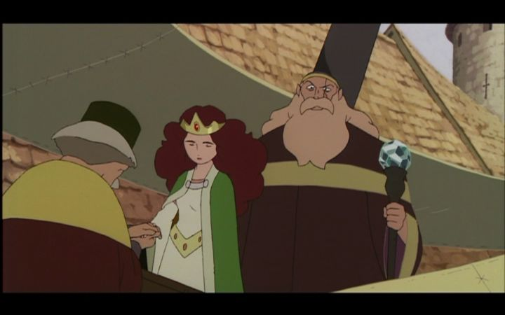

The 2001 anime film "Princess Arete" is one of those long-lost movies that never released in any format for North America, making it a treasure to long for in the eyes of knowledgable fans. A shame and an oversight, since Europe eventually got a Bluray release, but as of 2022, America is still waiting. It was by chance that I saw that Studio 4C briefly published the entire film on their official YouTube channel, complete with English subtitles, as a holiday promotion for viewers to watch for free. Sitting through a few minutes of interrupting YouTube ads was a small price to pay to finally see this story. As to why exactly the movie is interesting - it's primarily because of the pedigree behind it. Studio 4C primarily works on feature-length films, a rarity for anime studios other than perhaps Studio Ghibli, and their release schedule is irregular, with each of their releases being unique and wonderous, mature examples of animation. "Princess Arete" is one of their first proper movies, and is also the only movie that's missing from American shelves (1998's "Spriggan" is also long out of of print, but did get a DVD release a long time ago). This movie was also directed by Sunao Katabuchi, perhaps best known for directing the violent "Black Lagoon" series, but also with a knack for cute family movies with mature themes, such as "Mai Mai Miracle" and "In This Corner of the World." He also has some experience working with Hayao Miyazaki for "Kiki's Delivery Service" and "Sherlock Hound," notable here since "Princess Arete" very much resembles a Ghibli movie, or at least an attempt at it. For all these reasons, the movie should hold high interest.I wasn't fully prepared for the pacing or presentation, but first, I should explain the story. In a fantasy kingdom, Princess Arete, still a child, is kept in a dark corner of the castle, surrounded by books and games and ladies in waiting. But she's not at all satisfied with this, and often sneaks out of the castle to explore the town below. She marvels at the things they make and do, liking their crafts and handiwork to magic, and lamenting how she herself is unable to do such marvelous things (either lacking the capacity, or more realistically, because no one will teach her or any other girl). Meanwhile, the King is preparing to marry her off, and gives challenges to brave and valliant princes to seek treasures from dangerous lands. Upon privately meeting with the Princess and boasting of their trials, she proves to be much wiser and considerate, scolding them for stealing and slaughtering from innocents. The kingdom grows nervous for this disobidient and self-willed girl, thinking of it as a curse. But there are wizards and witches lurking among the people - one evil wizard introduces himself and uses the people's fears to demand the Princess' hand in marriage, in exchange for making her an obident and respectible figure (magically transforming her into an older, well-dressed woman that politely says "yes" to everything). We watch to see whether Arete can break free of the spell, and to learn whether the machinations of the wizard come to pass. Visually and tonally, the movie looks very much like a Studio Ghibli movie, with perhaps a mix of 2003's "Kino's Journey" in the simplicity of its designs. The movie looks entirely hand-painted with a light-shade of sepia to make it feel older. Character faces are rounded and simplfied but universally appealing in their modesty (it doesn't really look like an anime). There's a remarkable attention to detail in the slow and deliberate character animation. And there's some clever design work in the treasures and inventions displayed, a true mix of magical wonder and functional science (the movie hints that it might take place in a distant future from our own).  This all sounds like the sort of thing we praise Ghibli for all the time, and yet, I'm conflicted. The movie's style makes it look and feel OLD, and not in a good way, like nostalgia. It looks as if it was made in the 1980's (despite some brief use of CGI for compositing), already decades behind compared to what studios like Ghibli, Madhouse or Production I.G. were making in 2001. And its pacing is VERY slow, to the point of being boring - I'm certain young children would quickly fall asleep with it. Some Ghibli movies also have a relaxed pacing, but they break it up with humour, and with protagonists that have wonder and determination in their eyes. A big part of the story in "Arete" is the Princess' sadness for feeling helpless, and being turned into an empty and obidient vessel before she has the chance to escape those feelings. So it's slow and boring, both from fundamental flaws in the style and story. But it's a very smart story, and as some critiques have pointed out, its a strong feminist story. When the Princess is kidnapped, the room she's kept in is no different from the castle room she was kept in by her father. Her change in behaviour under the spell, to sit quietly and not even think about leaving, is exactly what the Kingdom would have expected and wanted, but is depressing to witness. It's a very convincing case to giving agency and freedom to women, and it's exciting to see that aspect of Arete slowly return to her (it's a bit hard to watch such a young girl go through so much, even at the beginning for men twice her age to romantically woo a child, but I'm pleased to see she prevails in the end). Beyond that, the world-building hinted at within the story (primarily that of the immortal wizards and the sources of their magic) are smartly crafted and give a lot to fantasize about. I should also mention the music is quite beautiful, although it's used sparringly. The Japanese voice acting (no English dub was made) is good, at times giving some spirited characterizations to those like the evil Wizard. Perhaps tightening the movie down to under 80 minutes would have helped? But even if it's a little slow and dull, for those that have the patience for it, "Princess Arete" has a smart and rewarding story that makes for a great fairy tale.
- "Ani" More reviews can be found at : https://2danicritic.github.io/ Previous review: review_Porco_Rosso Next review: review_Princess_Dragon